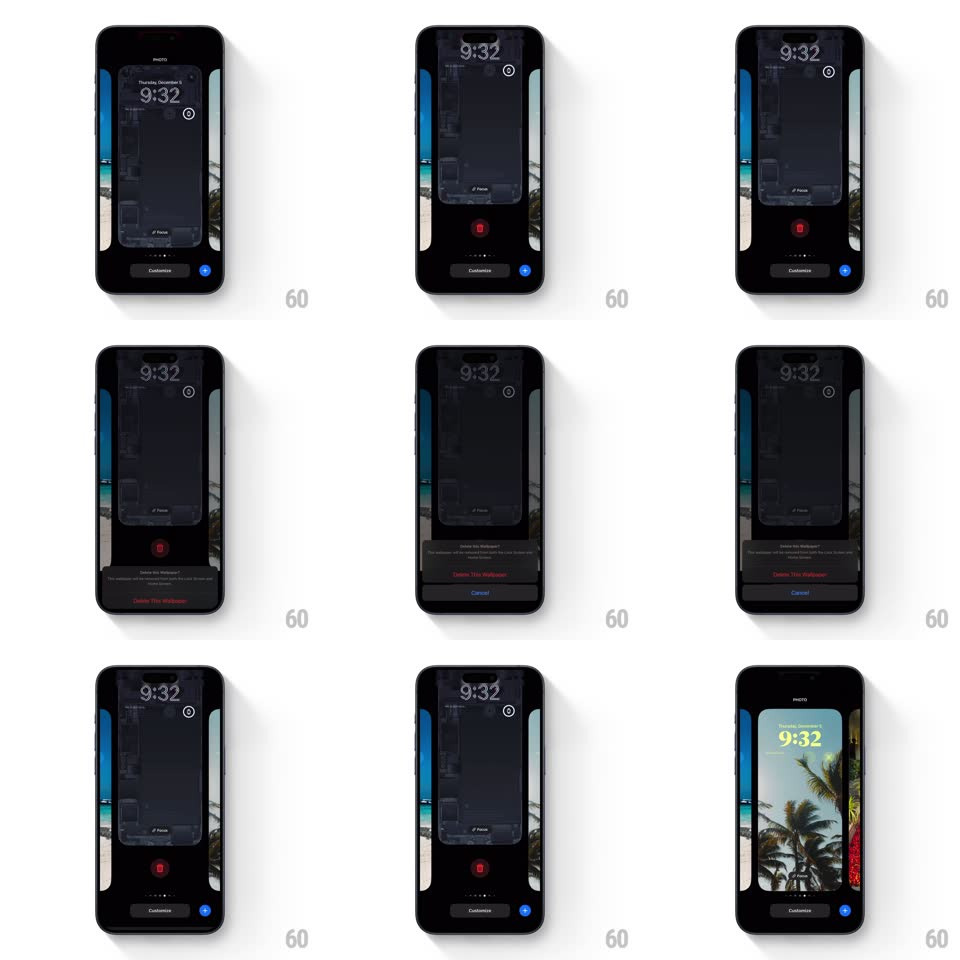

Media
Frame-by-frame

Rebuild this interaction 1:1: iOS wallpaper gallery delete flow - tapping the trash button dims the wallpaper preview and raises a dark confirmation sheet ("Delete This Wallpaper" / Cancel); choosing Cancel slides the sheet back down and restores the scaled wallpaper preview to full brightness.

Rebuild this interaction 1:1: iOS wallpaper gallery delete flow - tapping the trash button dims the wallpaper preview and raises a dark confirmation sheet ("Delete This Wallpaper" / Cancel); choosing Cancel slides the sheet back down and restores the scaled wallpaper preview to full brightness.
## Integration
Integration: stack-agnostic spec - springs given as stiffness/damping, timed motions as duration + curve; map every value to your framework and animation library of choice.
## Scene
iOS lock-screen wallpaper gallery: the current wallpaper card centered (photo of palm trees with the 9:32 clock), flanked by peeking edges of neighboring wallpapers, page dots, a "Customize" button, and a red trash button below the card. A dark dim layer covers everything when the confirmation sheet is up.
## Motion spec
Pattern: bottom-sheet confirmation with background de-emphasis, then dismissal.
- Trash tap: the wallpaper card scales down slightly (~0.94) and a black dim fades to ~60% over it (250ms, ease-out); page dots and Customize fade out.
- Confirmation sheet slides up from the bottom (spring ~340/28, ~380ms), dark card with red "Delete This Wallpaper" and a "Cancel" row.
- Cancel: sheet slides back down off-screen (350ms, ease-in), the dim lifts, and the wallpaper card springs back to full scale and brightness.
- Throughout, neighboring wallpaper edges stay visible at the screen sides, dimmed equally.
## Calibration
- The background scale-down and dim are one coupled motion - the preview must visibly recede when the sheet arrives.
- Sheet dismissal returns every layer to its exact prior state; no residual dim.
## Reduced motion
Sheet and dim crossfade in/out (200ms), no slide, no scale change.
## Don't miss
- The trash button is red and sits below the wallpaper card, above Customize.
- The confirmation sheet is a dark floating card with rounded top corners, not a full-width alert.